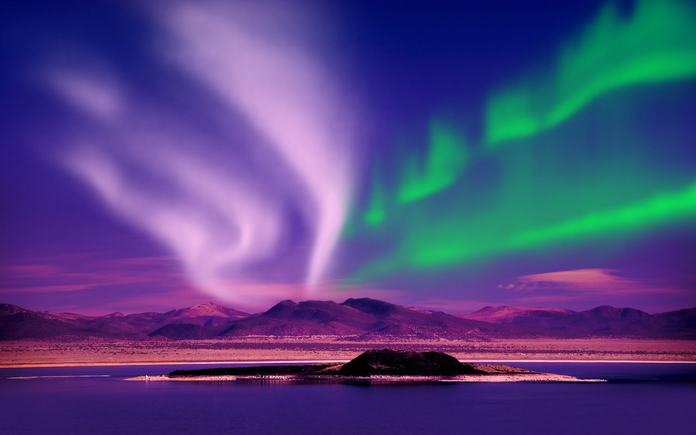

Aurores Boréales
Les aurores boréales sont des phénomènes lumineux spectaculaires qui se produisent dans les régions proches des pôles nord, lorsque les particules chargées du vent solaire entrent en collision avec les gaz de l'atmosphère terrestre. Ces interactions excitent des molécules comme l'oxygène et l'azote, générant des lumières colorées, principalement vertes, rouges, bleues ou violettes, dans le ciel nocturne. Elles sont visibles surtout pendant l'hiver, dans des lieux comme la Norvège, l'Islande ou le Canada, et ont inspiré de nombreuses légendes en raison de leur beauté magique et mystérieuse.
1. Origine et information
Le Soleil émet en continu un flux de particules chargées, composé principalement d'électrons et de protons, appelé vent solaire. Ces particules voyagent dans l'espace à des vitesses pouvant atteindre 800 km/s. Interaction avec le champ magnétique terrestre : Lorsque ces particules atteignent la Terre, elles sont déviées par son champ magnétique. Toutefois, certaines sont piégées dans les régions proches des pôles, où le champ magnétique est plus faible. Excitation des gaz atmosphériques : Les particules solaires entrent en collision avec les molécules de gaz dans la haute atmosphère (à environ 80-300 km d'altitude). Ces collisions excitent les atomes d'oxygène et d'azote, qui libèrent ensuite de l'énergie sous forme de lumière colorée lorsqu'ils reviennent à leur état normal.
2. Couleurs des aurores boréales
Les couleurs varient en fonction du type de gaz et de l'altitude des collisions.
- Vert :La couleur la plus courante, causée par l'oxygène à environ 100-200 km d'altitude.
- Rouge :Causée par l'oxygène à des altitudes plus élevées (au-dessus de 200 km).
- Bleu et violet :Résultent des collisions avec l'azote, généralement à des altitudes plus basses.
- Jaune ou rose :Une combinaison des couleurs précédentes.
3. Où et quand peut-on les observer ?
Les aurores boréales sont visibles dans une zone appelée "ovale auroral", située autour des pôles magnétiques. Les meilleurs endroits pour les observer incluent :
4. Phénomène similaire au Sud : les aurores australes
Les aurores se produisent également dans l'hémisphère sud, où elles sont appelées aurores australes. Elles sont cependant moins accessibles, car elles se manifestent souvent au-dessus de l'Antarctique et des océans environnants.
5. Symbolisme et culture
Les aurores boréales ont inspiré de nombreux mythes et légendes : Les peuples autochtones d’Amérique du Nord croyaient que les aurores représentaient les esprits de leurs ancêtres. En Norvège, elles étaient parfois perçues comme des signes de chance ou de mauvais présages. En Finlande, on les appelait "revontulet" ou "feux du renard", en référence à une légende où un renard magique balayait la neige avec sa queue pour créer les lumières dans le ciel.
6. Pourquoi les observer ?
Les aurores boréales ne sont pas seulement un phénomène scientifique fascinant, mais également une expérience magique et inspirante. Leur beauté éphémère et imprévisible en fait un spectacle unique, souvent considéré comme l'un des plus beaux phénomènes naturels de la Terre.
Aurores Boréales
- Type: Mausolée
- Initiateur: Shah Jahan
- Constructeur: Ustad Ahmad Lahauri
- Construction: 1631-1653
- Propriétaire: République indienne
- Inscription: Patrimoine mondial de l'UNESCO depuis 1983
- Visiteurs: 7 000 000/an
- Localisation: Agra, Inde